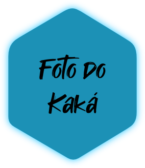

Construindo Soluções Digitais Inovadoras.
Com paixão por tecnologia e criatividade sem limites, transformo conceitos em projetos digitais funcionais e atraentes. Com mais de 10 anos de experiência em programação, sou familiarizado na linguagem Java e atualmente aprimoro minhas habilidades em HTML, CSS e JavaScript. Meu trabalho une design visual, usabilidade intuitiva e eficiência técnica para criar experiências online memoráveis. Conheça meu portfólio e veja como posso ajudar a concretizar suas ideias digitais.
